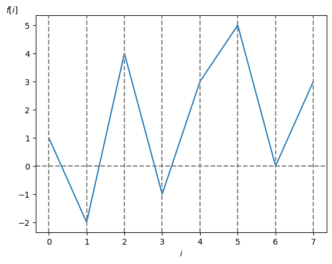
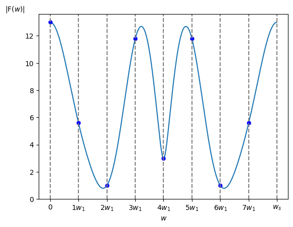
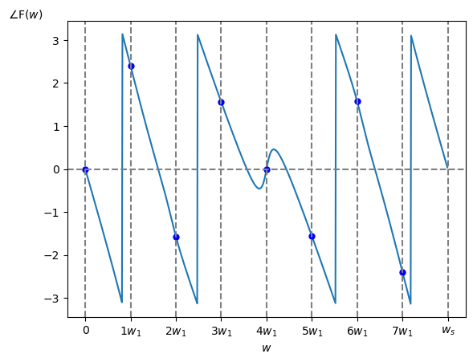

では具体例を示して視覚的にスペクトルを見てみましょう。
まず本来の DTFT の定義は無限級数の和ですが、それではコンピュータで計算できませんので、今回は非周期性時間領域ディジタル信号として $\textrm{N}=8$ [点]、サンプリング周波数 $f_s = 1$ [Hz]、サンプリング角周波数 $w_s = 2\pi$ [Hz]、サンプリング間隔 $\tau = 1$ [秒] として
\[ f[i] = [1,\ -2,\ 4,\ -1,\ 3, 5, 0, 3] \]ただし $i<0$ または $i \geq 8$の時 $f[i] = 0$ を考えます(図1)。

この $f[i]$ から求めた振幅・位相スペクトルは以下の様になります。
今回はグラフの横軸を角周波数 $w$ [rad/秒] としていますが、横軸を周波数 $f$ [Hz] にしたり波長 [m] にする場合も実際には多いです。
なおグラフ中の青点は参考値として示している DFT の値です。
ただしこちらで説明した様に N をかけて大きさを調整しています。
※1 青点は DFT の値(ただし $\textrm{N}$ をかけている)
※2 $w_1$ は DFT の基本角周波数 ($w_1 = w_s/\textrm{N}$)
※1 青点は DFT の値(ただし $\textrm{N}$ をかけている)
※2 $w_1$ は DFT の基本角周波数 ($w_1 = w_s/\textrm{N}$)
参考までに、上のグラフを描画したプログラムはこちらです。